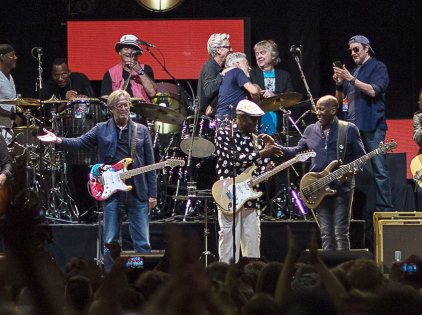
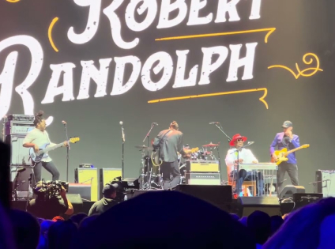
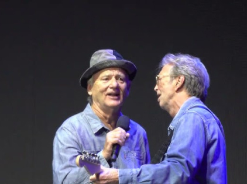

Eric Clapton announces the 7th installment of the Crossroads Guitar Festival. The Festival, which has become legendary in its own right for hosting performances and impromptu collaborations from the world’s most renowned guitar players, will take place over two nights on September 23rd and 24th at the Crypto.com Arena in Los Angeles, CA. Clapton will gather the past, present and future of guitar music onto one stage for an unparalleled musical event.
Tickets to the Festival are on sale now via Ticketmaster.
Clapton will gather the past, present and future of guitar music onto one stage for an unparalleled musical event. All profits from the Festival will benefit The Crossroads Centre in Antigua, a treatment and education facility founded by Clapton for chemically dependent persons.
Founded in 1998, Crossroads Centre, Antigua was created to provide treatment and education to chemically and alcohol dependent persons, their families and their significant others. Treatment is provided through residential care, family and aftercare programs. The pathway to recovery is founded on the 12 steps and a change in lifestyle. Crossroads Centre, Antigua also operates a halfway house in Antigua called the Bevon House and facilitates various ongoing recovery initiatives on the island of Antigua and in the Caribbean.
1. Crypto.com Arena Parking Lots: The arena typically has its own parking facilities or nearby parking lots. Follow signs for "Crypto.com Arena Parking" upon approaching the venue. Arriving early is advisable, as these lots tend to fill up quickly for popular events.
2. Nearby Public Parking Garages: There are several public parking garages within walking distance of Crypto.com Arena. Look for parking garages such as the West Hall Parking Garage and the Gilbert Lindsay Parking Garage, both of which are conveniently located nearby.
3. Public Transportation: Consider taking public transportation to the event. The Metro Rail and Metro Bus lines have stops near Crypto.com Arena, making it a convenient and environmentally friendly option. Check the schedule and routes for the nearest transit stations.
4. Ride-Sharing Services: You can use ride-sharing services like Uber and Lyft to drop you off and pick you up near the venue. Designated ride-sharing drop-off and pick-up zones are typically available, so check for those locations in advance.
5. Reserved Parking: Some nearby hotels and parking facilities may offer reserved parking spaces that you can book in advance. This can be a convenient option if you want to secure your parking spot ahead of time and avoid the hassle of searching for parking on the day of the concert.
Answer: The Eric Clapton Crossroads Tour 2023 is scheduled to take place at various locations throughout the year. Eric Clapton typically performs in multiple cities and countries during this tour. To find out specific dates and venues for the tour, please visit the official Eric Clapton website or check with authorized ticket vendors.
Answer: Tickets for the Eric Clapton Crossroads Tour 2023 can usually be purchased through various official ticketing platforms, including the official Eric Clapton website, as well as authorized ticket vendors and box offices. It's important to be cautious of third-party resellers and purchase tickets only from trusted sources to avoid scams and ensure you have a valid ticket for the event.
Answer: Eric Clapton's Crossroads Tour 2023 promises to be an unforgettable musical experience. While the exact setlist may vary from show to show, you can expect to hear a mix of Clapton's greatest hits spanning his legendary career, including iconic songs like "Layla," "Tears in Heaven," "Cocaine," and many more. Eric Clapton is known for his exceptional guitar skills and soulful performances, so fans can look forward to an evening of outstanding live music and a showcase of his timeless classics.